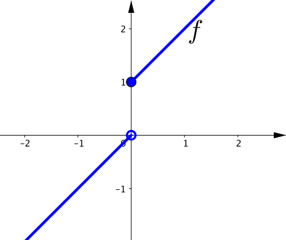
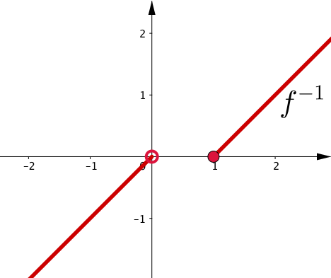

Leture 10
Definition 5.3.1. Let $S \subseteq \R$, and let $f \colon S \to \R$ be a function. Suppose for every $\epsilon \gt 0$ there exists a $\delta > 0$ such that whenever $x, c \in S$ and $\abs{x-c} \lt \delta$, then $\abs{\,f(x)-f(c)} \lt \epsilon$. Then we say $f$ is uniformly continuous.
Uniform vs Nonuniform continuity
Uniform vs Nonuniform continuity
$f \colon [0,1] \to \R$ defined by $f(x) := x^2$ is uniformly continuous.
Proof. Note that $0 \leq x,c \leq 1$. Then
$\sabs{x^2-c^2}$
$= \sabs{x+c}\sabs{x-c}\qquad \qquad \qquad \qquad \qquad $
$ \quad\leq \bigl(\sabs{x}+\sabs{c}\bigr) \sabs{x-c}$
$\leq (1+1)\sabs{x-c} .$
Therefore, given $\epsilon > 0$, let $\delta := \dfrac{\epsilon}{2}$. If $\sabs{x-c} \lt \delta$, then $\sabs{x^2-c^2} \lt \epsilon$.
On the other hand, $g \colon \R \to \R$ defined by $g(x):=x^2$ is not uniformly continuous.
Proof. Suppose it is uniformly continuous, then for every $\epsilon > 0$, there would exist a $\delta > 0$ such that if $\sabs{x-c} \lt \delta$, then $\sabs{x^2 -c^2} \lt \epsilon$. So consider $\epsilon =1.$ If such $\delta$ existed and $c = x+ \delta/2$ $\;\Ra \ds\sabs{x^2 - \left(x+ \frac{\delta}{2}\right)^2} \lt 1.$
However $ \;\ds \abs{x\delta + \dfrac{\delta^2}{4}} \lt 1$ ❗
which is a contradiction, since we can choose $x$ large. $\;\bs$
Comparison between continuity and uniform continuity
Let $S \subseteq \R$ and let $f \colon S \to \R$ be a function.
|
Continuous function |
Uniform continuous |
|---|
The function $f \colon (0,1) \to \R$ defined by $f(x) := \dfrac{1}{x}$ is not uniformly continuous.
Proof. Choose $\epsilon=2$ and $0 \lt \delta.$ Set $\delta_0 = \min\{\delta/2, 1/4\}$, $x= \delta_0$, and $y = 2 \delta_0.$ Then $x,y\in(0,1)$ and $\abs{x-y}= \delta_0 \lt \delta$ but
$\ds\abs{\frac{1}{x}-\frac{1}{y}}$ $=\ds\abs{\frac{y-x}{xy}} $ $ \ds= \abs{\frac{\delta_0}{2\delta_0^2} }$ $=\ds\abs{ \frac{1}{2\delta_0}}$ $\geq 2 $ $= \epsilon. $
Hence $f$ is not uniformly continuous. $\; \bs$
Nonuniform continuity criterion
Theorem 5.3.1. Let $S\subseteq \R$ and let $f \colon S \to \R$. Then the following statements are equivalent:
Nonuniform continuity criterion
Example 5.3.3. We can apply the previous result to show that $f(x)=\dfrac{1}{x}$ is not uniformly continuous on $(0,\infty)$.
Consider $x_n=\dfrac{1}{n}$ and $y_n=\dfrac{1}{n+1}$ in $(0,\infty)$. Then
$ \ds\lim_{n\ra \infty} (x_n-y_n) $ $=\ds\lim_{n\ra \infty} \left(\frac{1}{n}-\frac{1}{n+1}\right) $ $ =0, $
but $\,\abs{\,f(x_n)- f(y_n)}=1\,$ for all $\,n\in \N$.
Theorem 5.3.2. Let $f \colon [a,b] \to \R$ be a continuous function. Then $f$ is uniformly continuous.
👀 Complementary reading 📖
Definition 5.3.2. A function $f \colon S\subseteq \R \to \R$ is Lipschitz continuous, if there exists a $K > 0$, such that \begin{equation*} \abs{\,f(x)-f(y)} \leq K \abs{x-y} \;\;\text{for all } x \text{ and } y \text{ in } S. \end{equation*}
Theorem 5.3.3. A Lipschitz continuous function is uniformly continuous.
Theorem 5.3.3. A Lipschitz continuous function is uniformly continuous.
Proof. Let $f \colon S \to \R$ be a function and let $K$ be a constant such that $\abs{\,f(x)-f(y)} \leq K \abs{x-y}$ for all $x, y$ in $S$. For $\epsilon > 0$ be given. Take $\delta := \dfrac{\epsilon}{K}$. For all $x$ and $y$ in $S$ such that $\abs{x-y} \lt \delta$,
$ \ds\abs{\,f(x)-f(y)} $ $\ds \leq K \abs{x-y} $ $\ds\lt K \delta $ $\ds = K \frac{\epsilon}{K} $ $\ds = \epsilon .$
Hence $f$ is uniformly continuous. $\; \bs$
Not every uniformly continuous function is Lipschitz continuous.
For example $f(x):=\sqrt{x}$ defined on $I=[0,2]$.
$f$ is uniformly continuous on $I$ but there is no number $K>0$ such that $$|\,f(x)-f(0)|\leq K|x-0|$$ for all $x\in I.$
Definition 5.4.1.
Let $S \subseteq \R$.
We say $f \colon S \to \R$ is increasing
(resp. strictly increasing) if $x,y \in S$ with
$x \lt y$ implies $f(x) \leq f(y)$ (resp. $f(x) \lt f(y)$).
We define
decreasing and
strictly decreasing in the same way by switching the
inequalities for $f$.
If a function is either increasing or decreasing, we say it is monotone. If it is strictly increasing or strictly decreasing, we say it is strictly monotone.
One-sided limits for monotone functions are computed by computing infima and suprema.
Let $S \subseteq \R$, $c \in \R$, $f \colon S \to \R$ be increasing, and $g \colon S \to \R$ be decreasing.
If $c$ is a cluster point of $S \cap (-\infty,c)$, then
$\ds \lim_{x \to c^-} f(x) = \sup \{ \,f(x) : x \lt c, x \in S \}$
$\ds \lim_{x \to c^-} g(x) = \inf \{ g(x) : x \lt c, x \in S \} .$
One-sided limits for monotone functions are computed by computing infima and suprema.
Let $S \subseteq \R$, $c \in \R$, $f \colon S \to \R$ be increasing, and $g \colon S \to \R$ be decreasing.
If $c$ is a cluster point of $S \cap (c, \infty)$, then
$\ds \lim_{x \to c^+} f(x) = \inf \{ \,f(x) : x \gt c, x \in S \}$
$\ds \lim_{x \to c^+} g(x) = \sup \{ g(x) : x \gt c, x \in S \} .$
$\ds \lim_{x \to c^+} f(x) = \inf \{ \,f(x) : x \gt c, x \in S \}$
$\ds \lim_{x \to c^-} f(x) = \sup \{ \,f(x) : x \lt c, x \in S \}$
Theorem 5.4.1. If $I \subseteq \R$ is an interval and $f \colon I \to \R$ is monotone and not constant, then $f(I)$ is an interval if and only if $f$ is continuous.
Theorem 5.4.2. Let $I \subseteq \R$ be an interval and $f \colon I \to \R$ be monotone. Then $f$ has at most countably many discontinuities.
Theorem 5.4.3. If $I \subseteq \R$ is an interval and $f \colon I \to \R$ is strictly monotone, then the inverse $f^{-1} \colon f(I) \to I$ is continuous.
Theorem 5.4.3 does not require $\,f\,$ itself to be continuous.
Let
$f \colon \R \to \R$ be defined by
$\ds
f(x):=
\begin{cases}
x & \text{if } x \lt 0, \\
x+1 & \text{if } x \geq 0. \\
\end{cases}
$
The function $f$ is not continuous at $0$.
The image of $I = \R$ is the set
$(-\infty,0)\cup [1,\infty)$, not an interval.
Then $f^{-1} \colon (-\infty,0)\cup [1,\infty)
\to \R$ can be written as
\begin{equation*}
f^{-1}(y) =
\begin{cases}
y & \text{if } y \lt 0, \\
y-1 & \text{if } y \geq 1.
\end{cases}
\end{equation*}
It is not difficult to see that $f^{-1}$ is a continuous function.
|  |  |
|
$\ds
f(x):=
\begin{cases}
x & \text{if } x \lt 0, \\
x+1 & \text{if } x \geq 0. \\
\end{cases}
$
|
$\ds
f^{-1}(y) =
\begin{cases}
y & \text{if } y \lt 0, \\
y-1 & \text{if } y \geq 1.
\end{cases}
$
|